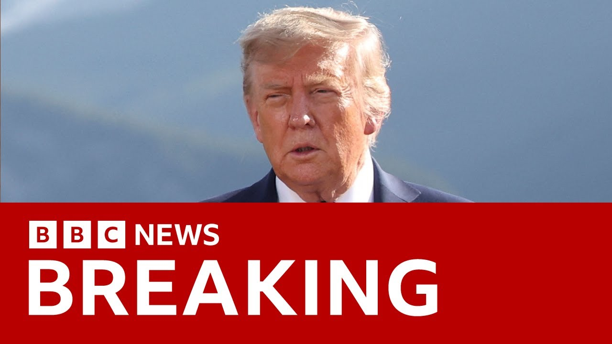

【“我们掌控了伊朗领空”，美国总统特朗普称】
Summary: US President Donald Trump claims total control over Iranian skies, asserting superiority of American military technology amid tensions between Iran and Israel. The post sparks confusion about US intentions—whether it signals direct involvement or a negotiation tactic. Diplomatic efforts remain unclear as planned nuclear talks stall, while Trump’s administration sends mixed messages on sanctions and foreign policy. Meanwhile, G7 leaders express frustration over Trump’s early departure, hindering discussions on trade and global security.
摘要： 美国总统唐纳德·特朗普宣称完全掌控伊朗领空，在伊朗与以色列紧张局势中强调美国军事技术的优势。此举引发对美国意图的困惑——是直接介入还是谈判策略。计划中的核谈判停滞，特朗普政府在制裁和外交政策上传递矛盾信号。G7领导人对其提前离场表示失望，贸易与全球安全议题讨论受阻。

⏱️ Estimated Reading Time: 13 min
📚 六级生词 📚 雅思生词 📚 托福生词 📚 专八生词 📚 SAT生词 📚 考研生词 📚 GRE生词 📚 高考生词
Straight to breaking news.
直奔突发新闻。
The very latest on that Middle East crisis between Iran and Israel.
关于伊朗与以色列中东危机的最新消息。
Donald Trump has just posted on social media.
唐纳德·特朗普刚在社交媒体发文。
There it is on your screen.
内容已显示在屏幕上。
We now have complete and total control of the skies over Iran.
我们现在完全掌控了伊朗领空。
Iran had good sky trackers and other defensive equipment and plenty of it.
伊朗曾拥有良好的天空追踪器和其他防御装备，且数量充足。
But it doesn't compare to American-made, conceived, and manufactured stuff.
但无法与美国设计制造的设备相提并论。
Nobody does it better than good old USA, he concludes in that post.
他在文中总结：“没人比伟大的美国做得更好。”
Let's speak to our diplomatic correspondent James Landale.
请连线我们的外交记者詹姆斯·兰代尔。
He's there at the G7 gathering and also our North America correspondent Nomi Igbal.
他正在G7峰会现场，还有北美记者诺米·伊格巴尔。
She's there live for us at the White House.
她在白宫为我们现场报道。
On Nomia, let me start with you and that post and it is the first word of that post that is getting a lot of attention.
诺米亚，首先请你谈谈那篇帖子——开篇词正引发大量关注。
He says we now have complete and total control of the skies.
他称“我们现在完全掌控了领空”。
It underlines how intertwined the US and Israel are on this.
这凸显美以在此事上的紧密关联。
It does, but it doesn't give any more clarity on what President Trump plans to do next.
确实，但未明确特朗普总统的下一步计划。
Uh, what he's doing there is flexing US might.
他此举是在炫耀美国实力。
But does this now mean that the US is going to get all out involved with Israel and strike or is it a scare tactic to try and get Iran around the negotiating table?
但这意味着美国将全力协助以色列打击伊朗，还是迫使伊朗回到谈判桌的恐吓策略？
Now, we don't even know if that is still u something that they are planning for.
我们甚至不确定这是否仍是他们的计划。
We know that there were meant to be the sixth round of talks uh between Iran and the US when it comes to uh nuclear on Sunday.
原定周日举行美伊第六轮核谈判。
That's now been stopped.
谈判现已中止。
But there are some suggestions that uh President Trump would still want Steve Wickoff, his Middle East envoy, and the vice president JD Vance to be involved in those talks.
但有迹象表明，特朗普仍希望其中东特使史蒂夫·威科夫和副总统JD·万斯参与谈判。
And speaking of the vice president, JD Vance, he's put out a very long post on X uh in which he has outlined the concerns that uh the Trump administration has, but he's also referred to just just if I can just pick out the bit that he said.
提到副总统JD·万斯，他在X平台发布长文阐述特朗普政府的担忧，其中特别提到——
He says, "Of course, people are right to be worried about foreign entanglement after the last 25 years of idiotic foreign policy."
他称：“过去25年愚蠢的外交政策后，人们担忧海外卷入合情合理。”
And that's obviously uh speaking or appealing to the base, the base that uh voted for Trump and millions of others on his no wars platform.
这显然是在迎合支持者——那些因‘不战争’纲领投票给特朗普的数百万人。
But does what does this mean going forward?
但这对未来意味着什么？
I don't think we're any clearer on what uh the US plans to do next when it comes to to what's happening in Iran.
我认为美国对伊朗的下一步计划仍不明确。
Let's cross to the G7 and to James.
现在连线G7现场的詹姆斯。
And of course, Donald Trump left that gathering early.
当然，唐纳德·特朗普已提前离场。
In terms of all of those other issues that the gathering wanted to discuss, whether it was tariffs and trade, whether it was the Middle East directly with Donald Trump or President Zilinski on Ukraine, give me a sense of the mood where you are.
关于峰会想讨论的其他议题——关税贸易、中东问题（与特朗普直接相关）或乌克兰问题（与泽连斯基总统相关），请描述现场氛围。
Well, this is like a birthday party uh where the birthday party boy has gone home.
这像一场寿星提前离场的生日派对。
Donald Trump turned 79 at the weekend.
特朗普周末刚满79岁。
Uh and there are a lot of leaders here um all dressed up, nowhere to go.
众多领导人盛装出席却无处可去。
Uh if you think about it, on the second day of a summit like this, you get all the guests, the nonG7 leaders who've come, the leaders of India, Brazil, South Korea, and elsewhere who've all come here uh to have conversations, not just with each other and other world leaders, but with Donald Trump.
想想看，峰会次日本是非G7领导人——印度、巴西、韩国等国元首与特朗普对话的机会。
And you mentioned President Zalinski.
你提到泽连斯基总统。
He of course uh is the central one of that because these are these events matter these summits because they are a chance for world leaders to sit down face to face with Donald Trump to actually shape some of his thinking to actually have a conversation that can get things into his head that doesn't have to go through other uh advisers and mediators and they were all hoping not just to shape some of his thinking on Iran but also uh his thinking on Ukraine and specifically to try and put more pressure on Russia.
这些峰会的重要性在于，各国领导人可当面影响特朗普对伊朗和乌克兰的看法，尤其希望加大对俄施压，无需通过顾问中介。
And although the Canadians and the Europeans and others are announcing some more sanctions today and there will be conversations with uh President Zalinski, uh Donald Trump left last night making absolutely clear that he is very skeptical of putting more sanctions on Russia because he said it damages uh the United States economy.
尽管加欧等国今日宣布新制裁并将与泽连斯基会谈，但特朗普昨夜离场时明确表示怀疑对俄制裁，称其损害美国经济。
So I think there's a sense of deflation here.
因此现场有种泄气感。
I think there's a sense also as Nomi was saying continued puzzlement and beusement about precisely what the president intends to do. uh over Israel in Iran because the messaging is confused and it is mixed.
如诺米所言，人们对总统在伊朗问题的意图持续困惑，因其信号混乱矛盾。
Namir, let me come back to you because we were talking an hour or so ago about that exchange on Air Force One with a CBS correspondent who put to the president that his own national intelligence director had said that Iran wasn't heading towards creating a nuclear device and he said, "I don't care what she said. I think they were very close."
纳米尔，回到一小时前空军一号上总统与CBS记者的对话——记者提到国家情报总监称伊朗未朝核武发展，他回答：“我不在乎她说什么，我认为他们非常接近。”
Uh so there was a very very interesting exchange there and it it begs the question who is Donald Trump depending on in terms of of his intelligence advice here.
这引发疑问：特朗普的情报建议依赖谁？
I think it was an extraordinary comment by President Trump especially given that Tulsi Gabbald is part of his base so to speak in his second term.
考虑到图尔西·加巴德是其第二任期核心支持者，特朗普此言非同寻常。
Donald Trump is very much surrounded by those who subscribe to his MAGA make America great again belief which does involve no walls by the way uh unlike his first term where he had more establishment politicians as he would see it.
特朗普现被MAGA（让美国再次伟大）拥护者包围——与首任期更多建制派政客不同。
uh but he's dismissed uh what she clearly said earlier in the year that yes there have been constant suggestions certainly by the Israeli prime minister Benjamin Netanyahu that Iran is imminently about to have a nuclear weapon but none of that has ever come to fruition none of that has ever been true leading to a lot of criticism by certainly those who don't want any wars in the Middle East or certainly want the US to be involved that is this similar to when there were claims of weapons of mass destruction in Iraq with Saddam Hussein for example
但他驳回了她年初的明确表态——尽管以总理内塔尼亚胡不断暗示伊朗即将拥核，但从未成真，招致反战人士批评，类似当年伊拉克大规模杀伤性武器的说法。
And so where he's getting that information from, it could be from the Israeli Prime Minister Benjamin Netanyahu himself, but we're not quite sure.
他的情报来源可能是内塔尼亚胡本人，但不确定。
Uh, but it does underline that Donald Trump uh does believe that there that Iran is a problem and he did say that he wanted something bigger than a ceasefire last night.
但这表明特朗普确实视伊朗为问题，且昨夜称想要“比停火更重大的行动”。
What does that mean?
这意味着什么？
We know that he has said that he Iran can't have nuclear weapon.
我们已知他称伊朗不能拥核。
But the only way that that could happen is if if America does get involved, physically involved in what's happening in the Middle East.
但唯一实现途径是美国军事介入中东。
And again, you know, as we were saying an hour ago, if Donald Trump does make that move and there's no indication that he will, that could be hugely legacy defining for him given that the people who voted him into office, millions and millions of votes across this country had done so largely because of his no wars mantra.
正如一小时前所言，若特朗普真采取行动（尚无迹象），这将极大定义其政治遗产，因数百万选民正是因“不战争”口号支持他。
Well, Namir, very interestingly, as you're speaking, the Reuters news agency is reporting that the US military is moving fighter jets to the Middle East and extending deployments of war plananes to bolster defenses amid this Israeli Iran conflict.
有趣的是，路透社刚报道美军正向中东调遣战机并延长轰炸机部署以加强防御。
That has come from US officials speaking to Reuters.
消息来自美方官员。
So again, we wait to see any of the next moves from the White House.
我们再次等待白宫下一步动作。
Let's go back to the G7 and James.
回到G7现场的詹姆斯。
And aside from what is going on in the Middle East, let me come back to trade and tariffs.
除中东局势外，请回到关税贸易话题。
We were listening there to Sakir Stalmer talking about the one deal that has finally got over the line.
我们刚听到萨基尔·斯塔尔默谈成一项协议。
Did anyone else sitting around the table there with Donald Trump yesterday? So many different countries where there are tariffs imposed.
昨日与特朗普同席的其他国家——许多面临关税——是否取得进展？
Did anybody feel they had made progress?
是否有国家认为取得进展？
Look, at these events, you're not going to have individual negotiations over the minutia and the and the precise nature of those conversations because it's not the format that these conversations are had in.
此类场合不会就细节进行单独谈判，因非对话形式。
I know the Japanese leader, the new prime minister has been very keen to make sure that he can make progress on a US uh Japan deal on tariffs.
日本新首相迫切希望推动美日关税协议。
So, there have conversations taking place about that.
相关对话正在进行。
The way the debate is shaped here is not about precise numbers, but it's essentially about getting arguments across to the American side.
讨论重点非具体数字，而是向美方传达观点。
So you'll have world leaders saying, "Look, Mr. Trump, if you wish us to join you in dealing with the challenges from countries like China, well, that's easier if our economies are flourishing and not if you're damaging them."
各国领导人会说：“特朗普先生，若希望我们联手应对中国等国的挑战，需确保我方经济繁荣而非受关税损害。”
In the same way the Europeans get the argument across saying look we accept that we have to spend more on our own defense that we've been free riding on the Americans for many many years on this but we cannot do that we cannot spend more on defense if our economies are being hit by American tariffs in other words that's the the nature the tone of the debate that's had about trade and tariffs here rather than the minuti of specific individual tariff rates and what may or may not happen but as I say that is a conversation that has been cut short because Donald Trump is no longer here.
同理，欧洲方表示：“我们承认需增加国防开支，结束多年搭美国便车的行为，但若经济受美关税打击则无法实现。”——这就是贸易关税讨论的基调，而非具体税率。但如我所言，因特朗普离场，对话中断。
So other leaders here who have not yet had the chance to have that conversation with him uh are going to have to find another time for that to take place.
未与他对话的领导人需另寻时机。
James Lando there at the G7. Thank you.
G7现场的詹姆斯·兰多，谢谢。
And thanks to Nomi Bell live for us at the White
还有白宫现场的诺米·贝尔，感谢。